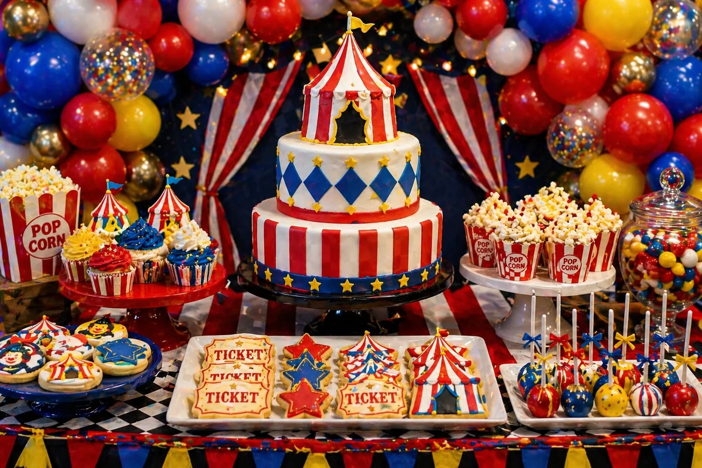
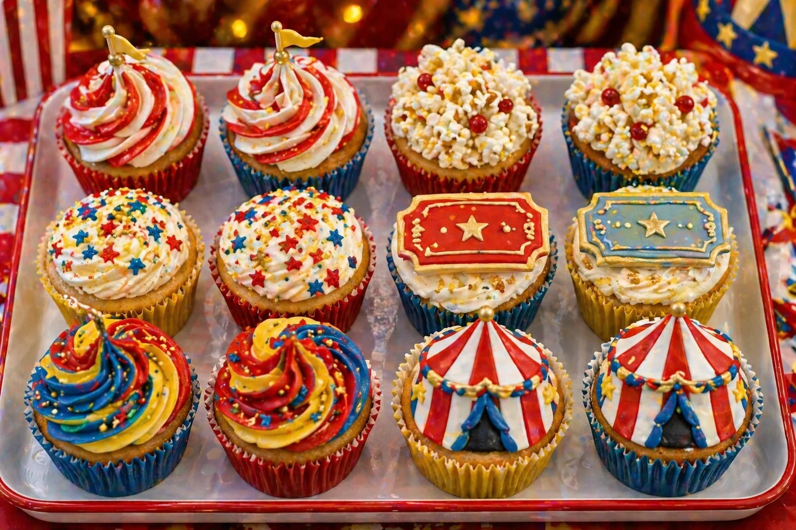

A circus party is a bright, joyful and classic theme for a children's birthday celebration. With red and white stripes, big top styling, colourful balloons, popcorn treats, ticket-style cookies and a show-stopping cake, the dessert table can become the main feature of the party.
At Little Moment Studio, our focus is balloon styling and celebration setups. We do not make cakes or cupcakes ourselves, but we know how important the dessert table is to the overall party look. This guide covers circus party inspiration — colour palettes, balloon ideas, three styling approaches and sweet treat ideas that work beautifully together.
If you would like cupcakes or a cake to complement your balloon display, we are happy to recommend a trusted local cake maker.
Why Circus Parties Are So Popular
Circus parties work well because they feel instantly fun, colourful and full of celebration. The theme is immediately recognisable — red and white stripes, gold stars and popcorn details communicate the big top from across the room without the need for novelty balloons or elaborate props. The palette is also highly flexible: it works just as well in bold carnival brights as in soft cream and vintage tones for a more premium first birthday setup.
| Element | Circus Party Inspiration |
|---|---|
| Balloon garland | Red, white, yellow, blue, gold and confetti balloons |
| Cake | Big top cake, striped cake, star cake or circus tent cake |
| Cupcakes | Popcorn cupcakes, striped swirls, star cupcakes or tent toppers |
| Cookies | Tickets, stars, circus tents, balloons and popcorn boxes |
| Cake pops | Striped cake pops, star cake pops or carousel-style pops |
| Backdrop | Big top tent, red and white stripes, bunting or stars |
| Props | Popcorn boxes, candy jars, tickets, stars and striped trays |
| Table styling | Red striped runner, colourful stands, gold accents and bright jars |
The best circus tables feel colourful and energetic without becoming too busy. A few strong stripe and star details — in the cake, the table runner and two or three balloon accents — are more effective than applying the pattern to every surface.
Circus Party Colour Palettes
Start with the colour palette before choosing the balloons, cake or treats. Classic circus uses a bold, bright combination of red, white, yellow, royal blue and gold. For a softer or more premium look, shift the palette towards cream, muted red and pale blue.
Classic Circus
Red, white, yellow, royal blue and gold. Bold, joyful and instantly recognisable.
Big Top Circus
Red, white, cream, gold and navy. A richer, slightly more grown-up big top palette.
Vintage Circus
Cream, muted red, pale blue and soft gold. Nostalgic and premium — beautiful for indoor parties.
First Birthday Circus
Soft red, cream, pale blue and gold. Refined and age-appropriate for a first birthday setup.
Idea 1: Classic Big Top Circus Table
A classic big top circus table is the most recognisable version of this theme. It uses red and white stripes, bright balloons and bold treat styling to create a joyful, high-energy party scene. This is the version children point to from across the room, and it works beautifully for all ages from toddlers through to older children's birthday parties.
| Element | Classic Big Top Table Idea |
|---|---|
| Balloon garland | Red dominant, with white, yellow, royal blue and gold chrome accents |
| Backdrop | Red and white striped panel, big top tent backdrop or star bunting |
| Cake | Big top cake with striped sides, star detail and tent-style topper |
| Cupcakes | Red and white swirl cupcakes and popcorn cupcakes on a tiered stand |
| Cookies | Ticket-style, star, circus tent and popcorn box cookies |
| Cake pops | Striped cake pops and star pops grouped near the cake |
| Props | Popcorn boxes, candy jars, gold stars and a red striped table runner |
| Sweet jars | Red, white, yellow and blue sweets in small jars on either side of the stand |
Red cake stands are one of the simplest ways to reinforce the circus theme — the colour coordinates with the balloon garland above and creates a clear visual link between the table and the backdrop.
Balloon tip
For a circus balloon garland, use red as the main base colour — around half the balloons — with white, yellow and royal blue as supporting tones. Gold chrome balloons woven through give the garland a premium, celebratory quality that matches the star and stripe details of the theme. Confetti balloons work beautifully as accents in a circus garland: they add visual interest and carnival energy without introducing a fifth solid colour. Space them out so each confetti balloon is surrounded by solid colour on either side.
Idea 2: Circus Cake & Cupcake Display

Circus cake and cupcake display styled by Little Moment Studio, Sittingbourne — big top cake, striped cupcakes, star cookies, popcorn treats and cake pops
A circus cake and cupcake display puts the birthday cake at the heart of the table. A big top cake with striped sides, a star or tent topper and red, white and yellow colouring becomes an unmistakable centrepiece, with striped and popcorn cupcakes grouped around it to carry the theme across the whole display. Ticket cookies and star cookies at the base of the stand complete the circus feel without requiring any extra props.
| Element | Cake Display Idea |
|---|---|
| Cake | Big top cake with striped sides, star detail and number or tent topper |
| Cupcakes | Red and white swirl cupcakes and popcorn cupcakes mixed on a tiered stand |
| Cookies | Ticket and star cookies at the base of the cake stand |
| Cake pops | Striped pops or star cake pops on a small display beside the stand |
| Cake stand | Red, gold or white tiered stand to match the palette |
| Balloon garland | Red, white, yellow and blue garland with gold accents above the table |
| Props | Popcorn box beside the stand and gold star scatter decorations |
Good cupcake styles for a circus cake display:
| Cupcake Style | Best For |
|---|---|
| Red and white swirl cupcakes | Classic big top look — stripe reads immediately at a glance |
| Popcorn cupcakes | Fun, theme-specific and easy to make with yellow buttercream |
| Star sprinkle cupcakes | Simple filler cupcakes in red, yellow or blue buttercream |
| Circus tent topper cupcakes | Strong themed detail — fondant or wafer paper tent on a smooth dome |
| Ticket topper cupcakes | Vintage circus feel — small fondant or printed ticket pressed in |
| Blue and yellow swirl cupcakes | Colour contrast and carnival energy on a mixed tray |
| Gold star cupcakes | More premium finish with gold lustre or sprinkle star detail |
For more cupcake ideas, see our birthday cupcake ideas guide.
Idea 3: Circus Cupcake Tray

Assorted circus cupcake tray — red and white swirls, popcorn toppings, star sprinkles, circus tent toppers and red, yellow, blue and gold party colours
A tray of assorted circus cupcakes is a brilliant centrepiece option when the party table is built around cupcakes rather than one large cake. Mixing two or three circus styles on the same tray — red and white swirls, popcorn cupcakes and star sprinkle cupcakes, for example — creates a colourful, varied display that photographs beautifully and gives guests a real sense of the theme before they even pick one up.
Styling tip
For a mixed circus cupcake tray, limit yourself to two or three styles at most. Red and white swirl cupcakes as the base, popcorn cupcakes as the secondary style, and circus tent or star topper cupcakes as the accent gives a tray that looks varied without feeling inconsistent. Use matching cupcake cases — red, yellow or striped — to tie the different styles together visually even before the frosting does its work.
Idea 4: Popcorn & Sweet Treat Table
A popcorn and sweet treat table is a fun way to make the circus theme feel interactive. Popcorn boxes in red and white, striped sweet bags, candy jars filled with red, yellow and blue sweets, star cookies and striped cake pops create a treat station that guests of all ages enjoy. This works especially well alongside the main cake table, or as a smaller standalone display for children's parties where you want guests to pick up little treats easily. A red and white striped table runner, gold star scatter decorations and warm lights complete the carnival feel.
Idea 5: First Birthday Circus Table
A circus theme can be softened beautifully for a first birthday. Replace bold red and yellow with cream, soft red, pale blue and muted gold, and the table shifts from bright carnival energy to something more premium and refined. A big top cake with a number one topper, soft popcorn-style cupcakes, star cookies and a cream and soft red balloon garland create a setup that feels genuinely special rather than simply decorated. For more first birthday inspiration, see our first birthday balloon ideas guide.
Idea 6: Vintage Circus Balloon Table
A vintage circus table gives the theme a softer, more nostalgic feel — cream, muted red, pale blue, champagne and soft gold replace the bright primary colours of a classic circus display. Vintage ticket cookies, a big top cake with cream and gold detailing, striped cake pops and popcorn boxes on gold trays create a table that feels styled rather than decorated. A balloon garland in cream, muted red, pale blue and champagne with gold chrome accents frames the display beautifully and suits both indoor party venues and more intimate celebration spaces.
What to Include on a Circus Dessert Table
A circus dessert table can be simple or full depending on the size of the party. Start with the cake and cupcakes, then layer in cookies, cake pops, popcorn boxes and sweet jars. Striped and star details in the props and table styling carry the theme without requiring an expensive backdrop.
| Treat | Circus Party Idea |
|---|---|
| Birthday cake | Big top cake, striped cake, circus tent cake or star cake |
| Cupcakes | Popcorn cupcakes, striped swirls, star cupcakes or tent toppers |
| Cookies | Tickets, stars, circus tents, popcorn boxes and balloons |
| Cake pops | Striped cake pops, star pops or red, yellow and blue carnival pops |
| Popcorn | Popcorn boxes or striped cups as interactive sweet treats |
| Sweet jars | Red, yellow, blue, white or rainbow sweets in small jars |
| Meringues | Red and white swirls or soft pastel carnival colours |
| Mini desserts | Small pots with star or circus topper details |
For practical advice on arranging the table layout, see our guide to how to style a dessert table for a children's party. For help coordinating the sweet treats with your balloon palette, see our guide on how to match cupcakes with your balloon display.
Circus Party Cupcake Ideas
Cupcakes work particularly well for circus parties because individual details — a stripe, a star, a fondant popcorn piece — communicate the theme immediately without requiring an elaborate cake. Mixing two or three styles on the same tiered stand keeps the display varied and interesting.
| Cupcake Style | Best For |
|---|---|
| Red and white swirl cupcakes | Classic big top look — piped alternating red and white buttercream |
| Popcorn cupcakes | Fun, theme-specific alternative — yellow or white buttercream with sugar pieces |
| Star sprinkle cupcakes | Easy colourful filler — bright swirl in red, yellow or blue with gold stars |
| Circus tent topper cupcakes | Strong themed detail — fondant or wafer paper tent on a smooth dome |
| Ticket topper cupcakes | Vintage circus feel — small fondant or printed ticket pressed in |
| Gold star cupcakes | Premium finish — lustre dust or edible gold stars on smooth buttercream |
| Striped cupcake cases | Simple circus detail even before any frosting is applied |
Useful piping tips for circus cupcakes:
| Effect | Tip |
|---|---|
| Tall swirl | Wilton 1M open star |
| Rosette swirl | Wilton 2D closed star |
| Smooth dome for toppers | Wilton 1A large round |
| Small stars and dots | Wilton 3, 4 or 12 round tip |
| Ruffles for striped effect | Wilton 104 petal tip |
For a fuller guide to piping tips and techniques, see our best piping tips for cupcakes guide.
Circus Party Balloon Ideas
The balloons create most of the visual impact around the dessert table. For a circus party, red as the main base colour — supported by white, yellow, blue and gold — creates a far more polished result than trying to balance all five colours equally.
| Theme | Balloon Colours |
|---|---|
| Classic circus | Red dominant, with white, yellow, royal blue and gold chrome accents |
| Big top circus | Red, white, cream and gold — confetti balloons for carnival energy |
| Vintage circus | Cream, muted red, pale blue and champagne — gold chrome accents |
| First birthday circus | Soft red, cream, pale blue, muted gold and number one focal point |
| Bright carnival | Red, yellow, blue, white and confetti — full carnival palette |
| Luxury circus | Deep red, cream, navy and champagne — no bright primary colours |
For balloon packages and availability across Sittingbourne and Kent, see our birthday balloon styling page and balloon garlands page.
Matching Balloons, Cake & Cupcakes
The sweet treats do not need to match the balloons exactly — they just need to feel like part of the same colour story. A red and white stripe detail repeated in both the cake and the balloon garland creates a strong visual link even when the other individual colours vary slightly.
| Balloon Palette | Cake & Cupcake Idea |
|---|---|
| Red, white, yellow, blue | Big top cake, red and white swirl cupcakes, ticket cookies |
| Red, white, cream | Circus tent cake, popcorn cupcakes, star cookies |
| Cream, pale blue, gold | Vintage circus cake, soft star cupcakes, champagne cake pops |
| Red, yellow, blue, white | Bright carnival cake, colourful mixed cupcake tray |
| Deep red, cream, navy | Luxury circus cake, gold star cupcakes, ticket cookies |
For more advice on coordinating your colour palette, see our guide to how to choose a colour palette for your balloon display.
Your Questions Answered
What colours work best for a circus party?
Red, white, yellow, royal blue and gold are the classic circus party palette and create the most recognisable big top look. Red is the anchor colour and should appear in the balloons, cake and cupcakes, with yellow, blue and gold used to balance and brighten the display. For a softer first birthday version, cream, soft red, pale blue and muted gold feel more premium and less bold. For a vintage circus table, swap bright red and yellow for muted red, cream, pale blue and champagne. Pick four to six colours and repeat them consistently across every element.
What balloons should I use for a circus party?
A red, white, yellow and blue balloon garland is the most recognisable circus party combination. Red should make up around half the balloons, with white, yellow and royal blue as supporting tones and gold chrome balloons woven through. Confetti balloons work brilliantly as circus accents — they add carnival energy without introducing a fifth solid colour. For a vintage circus display, use cream, muted red, pale blue and champagne balloons for a softer, more nostalgic feel. For a first birthday version, soft red, cream and pale blue balloons with a number one focal point create a polished, age-appropriate display.
What cupcakes work well for a circus party?
Red and white swirl cupcakes are the most popular circus party choice because the striped buttercream immediately reads as the big top tent. Popcorn cupcakes — using yellow or white buttercream piped to mimic popcorn and dusted with yellow sugar — are a fun, theme-specific alternative. Star sprinkle cupcakes in red, yellow and blue are an easy filler that repeats the palette without requiring detailed work. Circus tent and ticket topper cupcakes add strong themed detail and work well mixed on the same tiered stand. See our best piping tips guide for technique detail.
What should I include on a circus party dessert table?
A strong circus party dessert table includes a big top birthday cake as the centrepiece, twelve to twenty-four themed cupcakes in circus colours, ticket and star cookies, striped cake pops, popcorn boxes, candy jars and a red and white striped table runner. The balloon garland above the table — red, white, yellow and blue with gold accents — provides the main visual frame. Bunting, striped paper cups and a few small circus props carry the theme without cluttering the display.
Can a circus theme work for a first birthday?
Yes — a circus theme works beautifully for a first birthday when the palette is softened. Replace bold red and yellow with cream, soft red, pale blue and muted gold, and the table shifts from bright carnival energy to something more premium and refined. A big top cake with a number one topper, popcorn-style cupcakes, star cookies and a soft vintage balloon garland create a table that photographs beautifully. See our first birthday balloon ideas guide for more inspiration.
Whether you choose the bold classic circus palette, a soft vintage big top for a first birthday, or a luxury deep red and cream display for a more refined indoor party, the key is consistency. When the balloons, cake, cupcakes, cookies and props all share the same colour story — and the stripe or star detail appears in at least two or three places — the table reads as one coordinated, intentional display.
For more children's party inspiration, see our guides to race car party balloon and dessert table ideas and how to style a dessert table for a children's party.
Planning a Circus Party in Sittingbourne or Kent?
Little Moment Studio creates beautiful balloon displays and celebration setups for children's birthdays across Sittingbourne and Kent. We can also recommend a trusted local cake maker to complete your circus party dessert table.